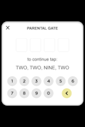
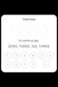
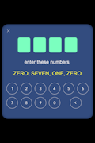
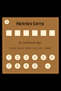
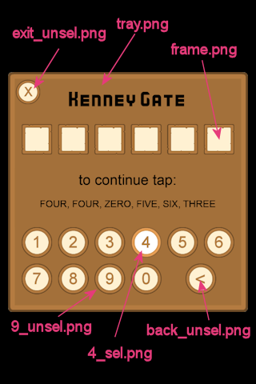

Child Gate (Numbers)
Child Gate (Numbers) is a module to create 'numeric simple instruction gates' that comply with Apple's Parental Gates Guide.
   
Need a child-gate! Don't spend hours coding your own. Just use the provided art, or supply your own, and get done fast!
This module:
- Is fully configurable,
- Comes with the source code, and
- Cotains four samples with art.
Basic Usage
A. Activate Plugin
First, purchase the module on Corona Marketplace to activate it.
B. Require it
Require the module where you need it.
local gate = require "gate"
C. Code Listeners
Write a success listener and an optional cancel listener.
local function onSuccess()
-- User completed gate. Do something now.
end
local function onCancel()
-- User canclled gate. Do something?
end
D. Show The Gate
Show the gate using provided art or your own.
gate.new( {
imagesPath = "images/numbers_ex1",
onSuccess = onSuccess,
onCancel = onCancel,
} )
Art
This gate comes with four samples of art, but creating your own is easy.
Tip 1: See the supplied art to see how your images should fit together.
Tip 2: All images should be PNGs.
Tip 3: All buttons have two versions: XXX_unsel.png and XXX_sel.png, representing the unselected and selected representations.
DIY Gate Art In 5 Easy Steps
- Create the background tray image.
- Create a number frame image, ensuring it is proportional to tray image.
- Create the number buttons 0 .. 9, ensuring they are proportional to the tray image.
- Create the back button (same size as the number button images).
- Create the exit button (any size you like).

When you are done, you will have 26 pieces of art:
- 1 Tray image.
- 1 Frame image.
- 20 Number buttons images.
- 2 Back button images.
- 2 Exit button images.
Configuring Gates
The gate builder function new() takes a single argument: params
Tip: The word proportional is used a lot below. This means the value is a number relative to the full sized art. It may later be auto-scaled to make things fit. The key thing to remember is, once you get a gate to look the way you want on one device, it will look good on all devices and have the same proportional layout.
params(required) - A table of named settings. OnlyimagesPathamdonSuccessare required. All others are optionalimagesPath- Path to images folder containg gate are you want to use.trayColor({ 1, 1, 1 }) - Color to shade tray.png with.frameColor({ 1, 1, 1 }) - Color to shade frame.png with.edgeOffset(20) - Minimum proportional edge gap/offset.exitButtonOffsetX(60) - Proportionally offset from left-edge of tray.pngexitButtonOffsetY(60) - Proportionally offset from top-edge of tray.pngnumberCount(4) - Count of numbers to enter.numberTween(40) - Proportional spacing between answer frames.numberOX(0) - Proportional x-offset versus frame.numberOY(0) - Proportional y-offset versus frame.buttonTween(30) - Proportional pixel-offset between number buttons.titleFont(native.systemFontBold) - Font to use for tray title.titleFontColor({ 0, 0, 0 }) - Color to use for tray title.titleFontSize(52) - Font size to use for tray title.numberFont(titleFont) - Font to use for answer numbers.numberFontColor({ 0, 0, 0 }) - Color to use for answer numbers.numberFontSize(100) - Font size to use for answer numbers.instructionsFont(native.systemFont) - Font to use for instructions.instructionsFontColor({ 0, 0, 0 }) - Color to use for instructions.instructionsFontSize(60) - Font size to use for instructions.questionFont(native.systemFont) - Font to use for question.questionFontColor({ 0, 0, 0 }) - Color to use for question.questionFontSize(65) - Font size to use for question.shakeAmplitude(10) - How much to shake screen if wrong answer entered.shakeTime(500) - Shake for milliseconds if wrong answer entered.completeDelay(333) - If correct answer given, wait this long to close dialog.onSuccess(function() end) - Reference to your 'correct answer' listener.onCancel(function() end) - Reference to your 'canceled dialog' listener.title("PARENTAL GATE") - Title of gate.instructions("to continue tap:") - Intructions to show.verticalRatios- Table of named values to proportionally adjust vertical position of gate elements. See verticalRatios below.numberNames- Table to translate numbers to strings. See numberNames below.
verticalRatios
These are the default vertical ratios (expressed as percentage of tray.png height):
local verticalRatios {
title = 0.08, -- Title
numbers = 0.28, -- Numbers
instructions = 0.45, -- Instructions
question = 0.55, -- Question
buttons = 0.71, -- Inputs
}
In example two, these are adjusted because the title isn't shown:
local myGate = gate.new( {
imagesPath = "images/numbers_ex2",
onSuccess = onSuccess,
onCancel = onCancel,
frameColor = { 123/255, 1, 191/255 },
trayColor = { 0.2, 0.3, 0.5 },
instructionsFontColor = { 1,1,1 },
questionFontColor = { 1, 1, 0 },
title = "", -- No title!
instructions = "enter these numbers:",
-- Adjust vertical layout
verticalRatios =
{
title = 0.0,
numbers = 0.22,
instructions = 0.40,
question = 0.52,
buttons = 0.68,
},
} )
numberNames
The default numberNames table is defined as:
local numberNames = {}
numberNames[0] = "ZERO"
numberNames[1] = "ONE"
numberNames[2] = "TWO"
numberNames[3] = "THREE"
numberNames[4] = "FOUR"
numberNames[5] = "FIVE"
numberNames[6] = "SIX"
numberNames[7] = "SEVEN"
numberNames[8] = "EIGHT"
numberNames[9] = "NINE"
If you wanted to use Italian, you could do this:
local numberNames = {}
numberNames[0] = "ZERO"
numberNames[1] = "UNO"
numberNames[2] = "DUO"
numberNames[3] = "TRE"
numberNames[4] = "QUATTRO"
numberNames[5] = "CINQUE"
numberNames[6] = "SEI"
numberNames[7] = "SETTE"
numberNames[8] = "OTTO"
numberNames[9] = "NOVE"
gate.new( {
imagesPath = "images/numbers_ex1",
onSuccess = onSuccess,
onCancel = onCancel,
numberNames = numberNames
} )
 Copyright © Roaming Gamer, LLC. 2008-2017; All Rights Reserved
Copyright © Roaming Gamer, LLC. 2008-2017; All Rights Reserved